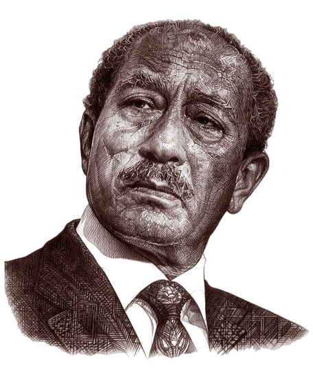

حاربنا من أجل السلام الوحيد الذى يستحق وقفة سلام، وهو السلام القائم على العدل

سيرته الذاتية
ولد محمد أنور السادات في قرية ميت أبو الكوم، مركز تلا، محافظة المنوفية في ٢٥ ديسمبر ١٩١٨.
التحق بكتاب القرية ثم انتقل إلى مدرسة الأقباط الابتدائية بطوخ دلكا وحصل منها على الشهادة الابتدائية. وفي عام ١٩٣٨ تخرج السادات في الكلية الحربية وألحق بسلاح المشاة بالإسكندرية، وفى العام نفسه نقل إلى منقباد وهناك التقى لأول مره بالرئيس جمال عبد الناصر، وانتقل في أول أكتوبر عام ١٩٣٩ لسلاح الإشارة.
عاد عام ١٩٥٠ إلى القوات المسلحة برتبه يوزباشي، على الرغم من أن زملاؤه في الرتبة كانوا قد سبقوه برتبة الصاغ والبكباشي، وقد رقى إلى رتبه الصاغ ١٩٥٠ ثم إلى رتبه البكباشي عام ١٩٥١، وفى العام نفسه اختاره عبد الناصر عضوا بالهيئة التأسيسية لحركه الضباط الأحرار.
تولى منصب رئيس تحرير جريدة الجمهورية (١٩٥٥- ١٩٥٦)، وعين نائبًا لرئيس الجمهورية في الفترة من ١٩٦٤ حتى عام ١٩٧٠، ثم تولى رئاسة مصر خلفًا للرئيس جمال عبد الناصر عام ١٩٧٠، وكذلك رئاسة الوزارة في الفترة من ١٩٧٣ إلى ١٩٨١.
قاد مصر والعرب في عام ١٩٧٣ نحو تحقيق نصر حرب أكتوبر التي أدت إلى استرداد مصر كامل أراضيها المحتلة، وفي عام ١٩٧٥ قام السادات بافتتاح قناة السويس بعد تطهيرها من أثار العدوان.
وقد وقع الرئيس السادات عام ١٩٧٩ على إطار السلام النهائي بين مصر وإسرائيل - معاهدة كامب ديفيد- بحضور الرئيس الأمريكي جيمي كارتر ورئيس الوزراء الإسرائيلي مناخيم بيجين.
انتهى حكم السادات باغتياله أثناء الاحتفال بذكرى حرب ٦ أكتوبر عام ١٩٨١، إذ قام خالد الإسلامبولي وآخرون بإطلاق النار عليه أثناء الاستعراض العسكري.